혼합기 19,837개 · 출구 링 159개 · 수평관 3개 · 칭량호퍼 1개. 총 20,000개 보존. 촬영 중 시뮬레이션 시간 고정.
오른쪽 큰 수취호퍼 아래의 원형 출구 링, 왼쪽 WH101 칭량호퍼, 두 호퍼 사이 상단 수평관을 비교한다.
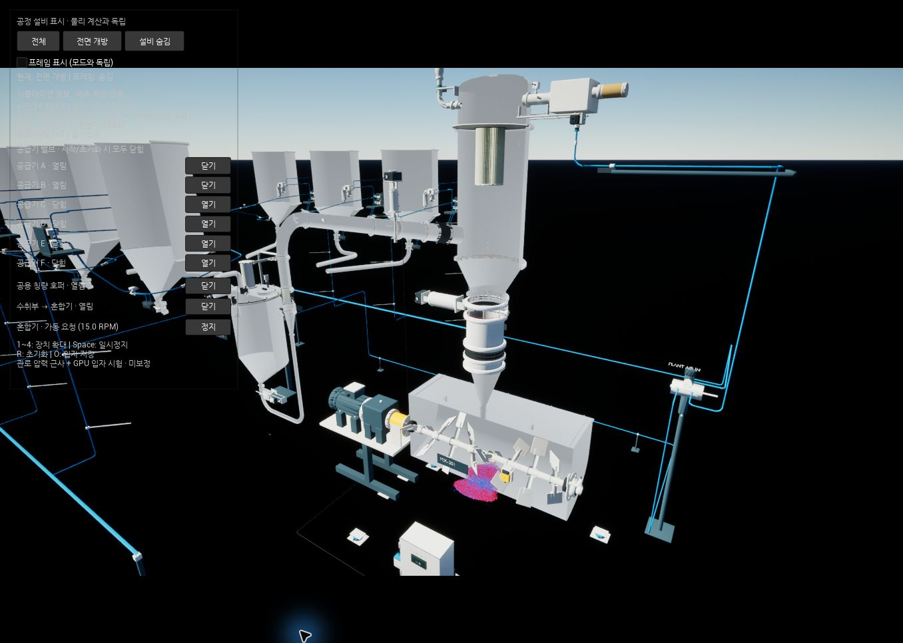
수취호퍼 원뿔 아래, 밸브와 직관 연결부 사이의 좁은 원형 턱에 빨강 105개·파랑 54개가 둘레를 따라 남았다. 출구는 열린 상태다.
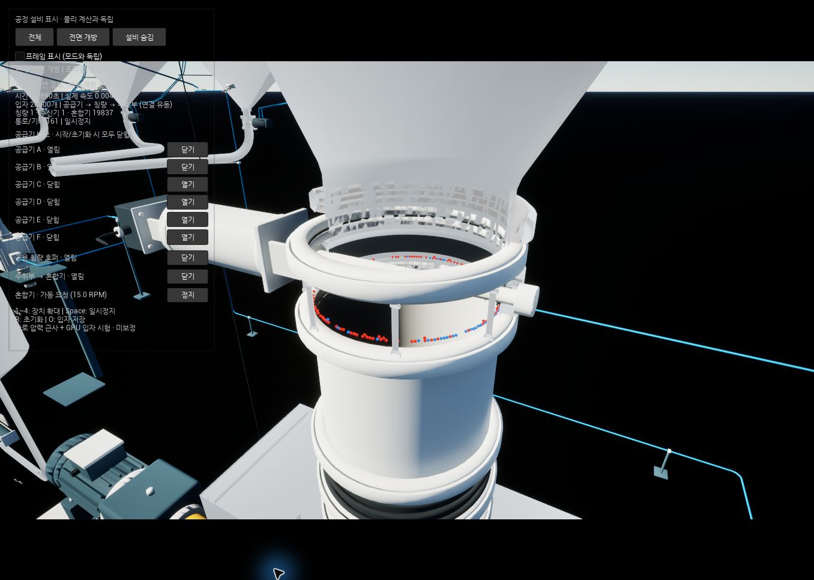
왼쪽 WH101에서 올라온 관이 오른쪽 큰 수취호퍼에 들어가는 상단 수평 구간이다.
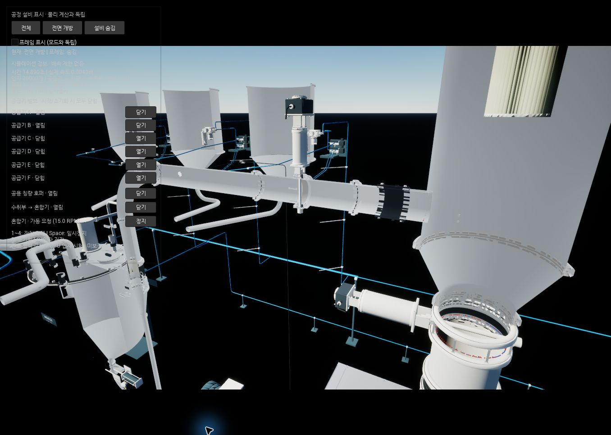
왼쪽 밸브 바로 오른쪽 바닥에 파랑, 검은 연결부 시작점 바닥에 파랑, 수취호퍼 입구 직전 바닥에 빨강이 있다. 그림 5~7에서 각각 확대했다.
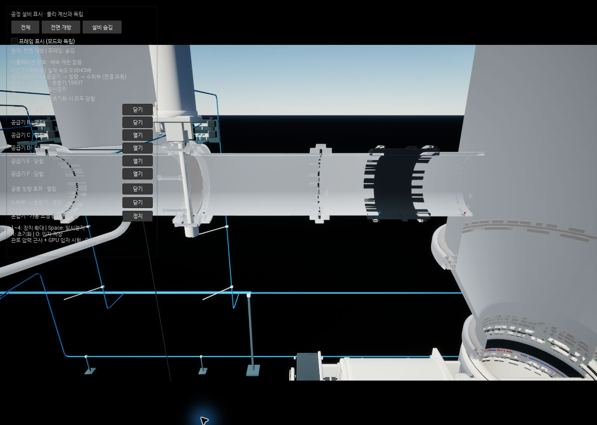
중앙 파란 입자 ID11895. 물리 좌표 (2.19984, -0.000004907, 2.623)m. 수평관 바닥과 접촉한다.
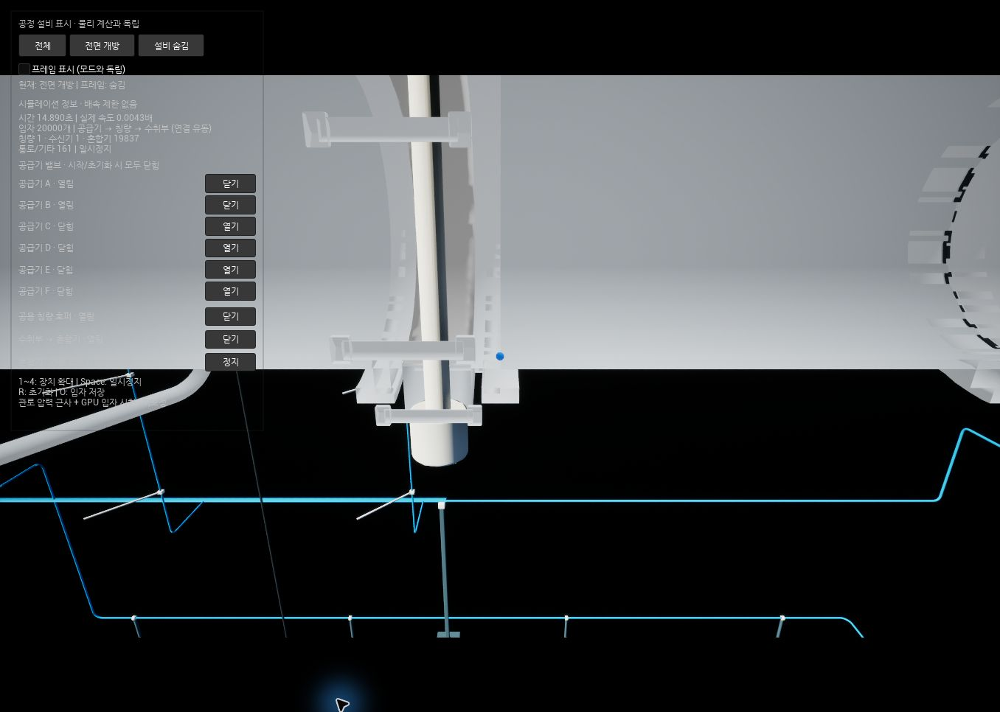
중앙 파란 입자 ID10437. 물리 좌표 (2.57118, -0.000023841, 2.623)m. 오른쪽 끝에 그림 7의 빨간 입자도 보인다.
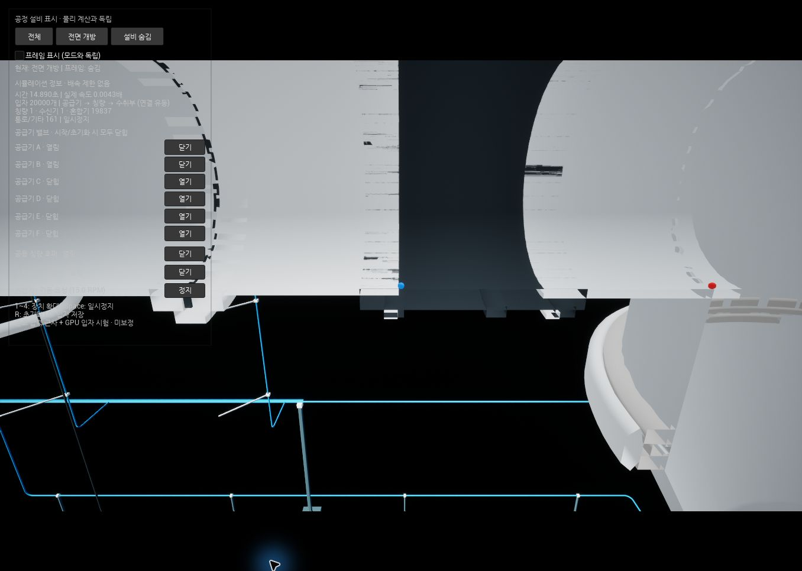
중앙 빨간 입자 ID7452. 물리 좌표 (2.75203, -0.000014563, 2.623)m. 큰 수취호퍼 측벽으로 들어가기 직전의 관 바닥이다.
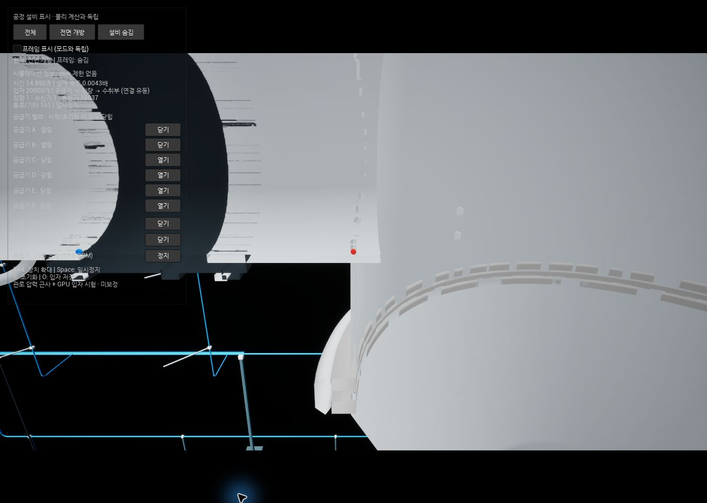
하단 원뿔 안쪽에 파랑 1개가 남았다. 외부 전면 개방 화면에서는 해당 접촉면이 숨겨지므로 그림 9~10은 전체 표면을 표시한 내부 시점으로 촬영했다.
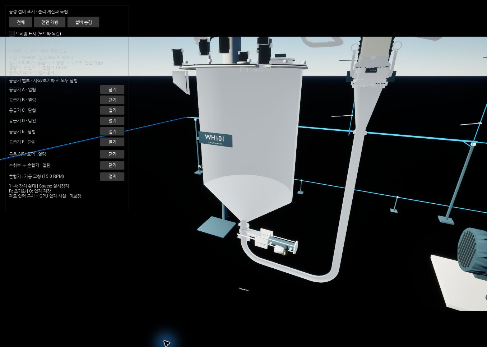
중앙 파란 입자 ID10590. 물리 좌표 (-0.0783161, -0.096052, 0.780217)m. 아래쪽의 작은 구멍은 칭량호퍼 출구다. Unreal 좌표는 물리 좌표의 Y 부호가 반대이고 단위는 cm다.
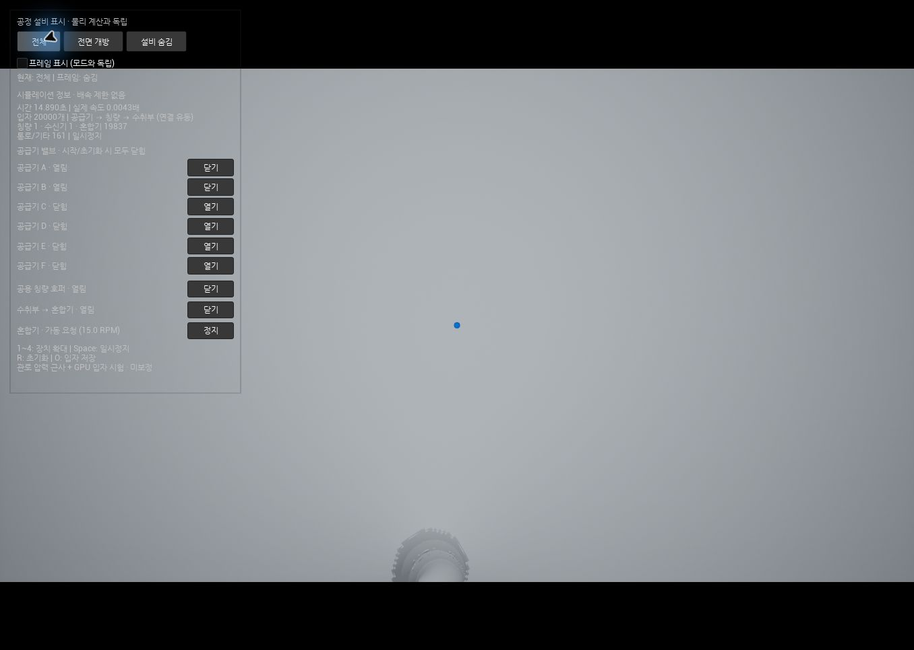
중앙 아래 출구 구멍의 오른쪽 위 경사면에 작은 파란 입자가 보인다. 그림 9의 근접 사진과 같은 입자다.
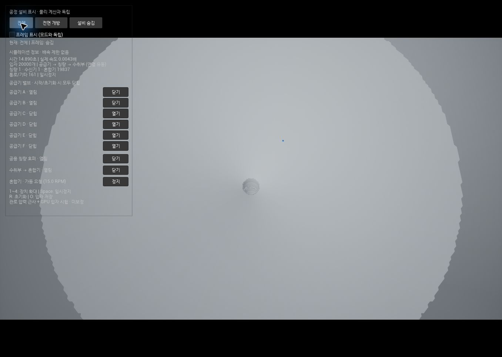
동일 PIE를 유지하고 툴바 일시정지까지 적용했다. 시간 14.89008초. 전면 개방·프레임 숨김·전체 공정 시점. 재실행하지 않았다.
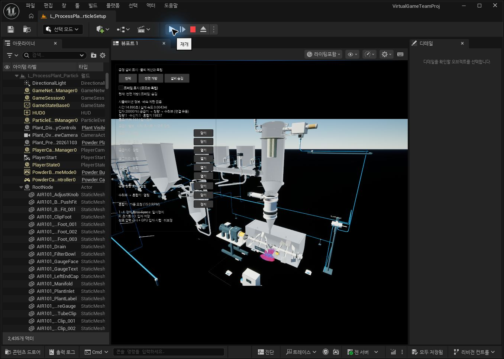